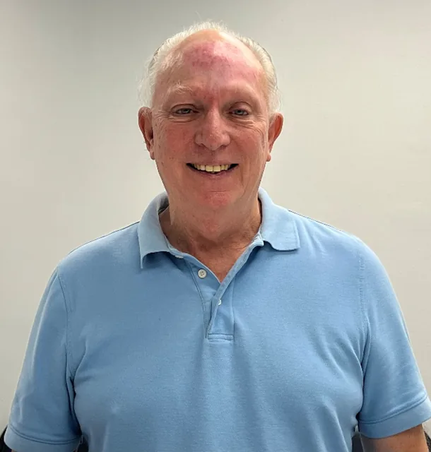

At B&T Natural Health & Wellness Association, we provide a thoughtful, educational approach to wellness that helps individuals better understand how nutrition and lifestyle choices may influence overall well-being.
Our services are non-invasive, personalized, and designed to support informed decision-making — not one-size-fits-all solutions.
Educational wellness services | Non-invasive | Personalized
Our Approach
We work with members who value clarity, education, and personalized guidance. Using non-invasive, educational tools such as Nutrition Response Testing®, Nutritional Health Coaching, and Neuro-Matrix Technique® we help observe patterns of nutritional and lifestyle-related stress that may be influencing general wellness.
The information gathered is used to guide individualized nutrition and lifestyle education tailored to each person. Our approach is collaborative and transparent — if our services are not appropriate, we are upfront about that.
Our Services
Nutrition Response Testing® is a non-invasive, educational assessment method used to help observe patterns of nutritional stress. Insights gained help guide personalized nutrition and lifestyle recommendations intended to support general wellness and complement medical care.
Nutritional Health Coaching provides personalized nutrition and lifestyle education designed to meet individuals where they are. Guidance is practical, realistic, and focused on building sustainable habits that support long-term wellness.
Neuro-Matrix Technique® is a non-invasive, educational wellness assessment method that focuses on how the body’s nervous system communicates with muscles, fascia, and structural pathways.
The insights gathered from this process help provide a clearer understanding of how different areas of the body may be interacting and where supportive wellness strategies may be helpful.
Our Philosophy
We believe wellness begins with understanding. Our role is to provide education and guidance that helps individuals make informed, confident wellness decisions based on their unique needs and goals.
Listening to the body changed my life,
now I help others learn how to listen too.
About Trish Dillon, NTP
My journey into natural health wasn’t a career decision — it was a life-changing turning point.
Both of my parents passed away from cancer, my mother at just 59 and my father at 69. Losing them so young left me with a question that would not go away: what could we have done differently to better support their health along the way?
That painful experience became the beginning of my mission. I became committed to learning how the body functions, what contributes to imbalance, and how nutrition and lifestyle may support the body’s natural processes.
In 2016, I began managing Nutrition Response Testing® workshops and became a client of Dr. Brad Kristiansen. By following personalized, nutrition-focused recommendations, I experienced changes in my own health that reshaped my understanding of what the body may be capable of when properly supported. What began as a front-desk role grew into a teaching assistant position in 2021, and with each step my purpose became clearer.
Since then, I have completed nutrition coaching training, advanced clinical training in Nutrition Response Testing®, and certification as a Nutritional Therapy Practitioner. I am currently enrolled in a Tri-Doctorate program, inspired by the original meaning of the word doctor — teacher.
Along the way, Dr. Brad and I became partners not only in practice but in life. We married on 2-2-22 and are building the clinic we once dreamed of — a place where people feel heard, supported, and empowered to take an active role in their wellness journey.
Today I am a daughter who has known loss, a woman who has experienced personal transformation, a wife who shares a mission with her husband, and a mom of three (and proud grandmother of two) who wants future generations to live vibrant, well-nourished lives.
It is from this perspective that I bring both personal experience and professional training into my work, using an educational, non-invasive approach to help people better understand their bodies and their nutritional needs.
I believe the body is brilliantly designed, always communicating, and worthy of being listened to.
Wellness starts with understanding what your body may have been trying to tell you all along.

When given the right support, the body is capable
of far more than we’re often led to believe.
About Dr. Brad Kristiansen, Doctor of Chiropractic (Retired)
Dr. Brad’s passion for helping people understand their bodies began at just five years old.
After a devastating automobile accident left him paralyzed from the waist down, his parents were told there was little hope for recovery. Refusing to accept that answer, they brought him to a chiropractor. His father carried him into the office — and Brad walked out on his own.
That experience left a lasting impression: the body is capable of far more than we are often led to believe when given the right support.
Years later, while practicing chiropractic, Dr. Brad attended a seminar led by Dr. Freddie Ulan, founder of Nutrition Response Testing®. Volunteering during a live demonstration, he experienced another pivotal moment that deepened his understanding of how nutritional factors may influence the body’s ability to respond to stress.
From that point forward, Dr. Brad committed himself to mastering Nutrition Response Testing®. He studied directly under Dr. Freddie Ulan, Doctor of Chiropractic (Retired), achieved the highest level of clinical training, and was later invited to teach and mentor practitioners across the country.
Today, Dr. Brad is recognized for his depth of experience, clinical insight, and genuine compassion for individuals who feel they have “tried everything” without finding clear answers. His work integrates structural awareness with nutrition-focused, educational support—helping clients better understand patterns of stress and areas where the body may be asking for support.
Dr. Brad brings decades of professional experience and personal perspective to his work, using a non-invasive, client-centered approach designed to complement medical care—not replace it.
He is a father of three, a grandfather of three, and a great-grandfather of one, and believes one of the greatest gifts we can pass on to future generations is the knowledge and tools needed to support long-term wellness.
Helping people reconnect with hope, confidence, and the belief that their bodies are capable of positive change remains one of the greatest joys of his work.
Wellness starts with understanding the remarkable potential the body has when it is properly supported.
***Dr. Kristiansen earned his Doctor of Chiropractic degree and practiced for many years prior to retiring from chiropractic practice. At B&T Natural Health & Wellness Association, his work focuses on wellness education and Nutrition Response Testing®.
If you’ve ever felt like you’re not getting clear answers, you’re not alone.
Our goal is to help you better understand your body so you can make informed, confident decisions about your health.
Important Note:
B&T Natural Health & Wellness services are educational in nature and intended to support general wellness through nutrition and lifestyle guidance. We do not diagnose, treat, prescribe, or cure medical conditions.
This approach is intended to complement medical care, not replace it. Clients are encouraged to continue working with their licensed healthcare providers for medical evaluation, diagnosis, and treatment when needed.
FAQs
Still have questions?
That’s completely normal.
Here are some of the most common things people ask before getting started.
B&T Natural Health & Wellness Association is a private, membership-based wellness organization that offers educational nutrition and lifestyle services. Our approach is non-invasive and holistic, designed to help individuals better understand nutritional and lifestyle-related stress patterns that may be influencing overall wellness.
We use educational methods such as Nutrition Response Testing® and Nutritional Health Coaching to support informed decision-making. Our services are intended to support general wellness and complement — not replace — medical care.
No. We do not diagnose, treat, prescribe for, or cure medical conditions. Our services are educational in nature and focused on nutrition and lifestyle support.
Clients are encouraged to consult with licensed healthcare providers for medical diagnosis, treatment, and medical decision-making.
Our primary services include:
Nutrition Response Testing® (NRT): a non-invasive, educational assessment method used to help observe patterns related to nutritional and lifestyle stress
Nutritional Health Coaching: personalized nutrition and lifestyle education focused on whole-food nutrition, practical guidance, and sustainable habits
All services are educational, non-invasive, and individualized.
The first step is determining whether you are a Nutrition Response Testing® case. If we determine that this approach is not appropriate for you, we will let you know upfront.
If you are a Nutrition Response Testing® case, it is our experience and professional opinion that this approach can provide valuable insight and guidance to support foundational wellness through individualized nutrition and lifestyle education.
Our approach is non-invasive, personalized, and education-focused. Rather than generalized programs or one-size-fits-all recommendations, we tailor guidance based on individual nutritional and lifestyle stress patterns.
We also prioritize clarity and transparency. If our services are not appropriate for you, we will tell you.
During the initial visit, we review your health history, wellness goals, and current concerns. If appropriate, Nutrition Response Testing® may be used to help observe nutritional stress patterns.
We then discuss whether our services may be a good fit and outline possible next steps based on your individual needs and preferences.
Results vary by individual. Our role is to provide personalized nutrition and lifestyle education intended to support general wellness.
We do not guarantee outcomes, as individual experiences depend on many factors including consistency, lifestyle choices, overall wellness status, and individual circumstances.
B&T Natural Health & Wellness Association operates as part of the Professional Wellness Alliance (PWA), a private membership community created to help protect access to holistic and natural wellness services.
Membership establishes a private relationship that allows us to offer non-invasive, educational wellness services responsibly within today’s regulatory environment. This structure supports transparency, protects both member and provider rights, and helps ensure continued access to the services we offer.
There is no charge for membership, and members may cancel at any time.
Yes. Our services are designed to complement medical care, not replace it.
Many members choose to work with us alongside their licensed healthcare providers.
The first step is completing the simple, one-page PWA membership agreement.
Next, you’ll schedule an initial consultation. This allows us to determine whether Nutrition Response Testing® is appropriate for you and whether our educational wellness services align with your goals.
© 2026 B&T Natural Health & Wellness Association — Private Membership Association.
Services provided by a Licensed Member Provider through the Professional Wellness Alliance.
Educational wellness services are available to members of B&T Natural Health & Wellness Association.
B&T Natural Health & Wellness Association is a private membership association. All services are educational in nature and intended to support general wellness through nutrition and lifestyle guidance. We do not diagnose, treat, prescribe, or cure medical conditions.
Information provided through Nutrition Response Testing®, Nutritional Health Coaching, and Neuro-Matrix Technique® is not intended to replace medical advice, diagnosis, or treatment and is designed to complement, not replace, care provided by licensed healthcare professionals. Members are encouraged to consult with their healthcare providers for medical concerns.
Wellness starts with understanding.